Live app: shivanksood-prog.github.io/wiom-music · sab animations demo hain
Vertical swipe = channel (jagah). Sawaal: song skip ka gesture kya ho?

Scene pe kahin bhi left swipe = agla gaana, right = pichla. Reels ka muscle memory — vertical jagah badalta hai, horizontal gaana. Koi naya UI nahi.
RECOMMENDED
Instagram Stories pattern: scene ke right hisse pe tap = agla, left pe tap = pichla. Ek ungli, zero seekhna. Risk: galti se skip ho sakta hai.
ACCIDENTAL TAPS
Pill ki ghoomti disc ko fling karo = agla gaana, cassette-rewind "khirrr" ke saath. Sabse mazedaar aur shareable — par chhota target, seekhna padta hai. Best as add-on.
ADD-ON, NOT PRIMARYHidden 1px player YouTube ToS ka gray zone hai — aur hidden play par views bhi аksar count nahi hote, matlab labels ko kuch nahi milta. Visible video = defensible + views count.

Video chhote in-scene CRT TV mein by default (compliant, views count). TV ka knob dabao to disc mein simat jata hai — user ka choice, hamara design nahi. Zyadatar log chalta chhod denge.
RECOMMENDED
Abhi jaisa clean audio-only look; pill pe 📺 button dabao to CRT slide-in hota hai. Screen sabse saaf — par default hidden hi rehta hai, to gray zone aur uncounted views waisi hi.
STILL GRAY BY DEFAULT

Nostalgia-TV channel apne scene ke CRT mein video dikhata hai (thematically perfect); baaki 29 channels audio-only. Kahani achhi hai, par asli compliance nahi — 29 channels gray zone mein hi rehte hain.
PARTIAL STORY